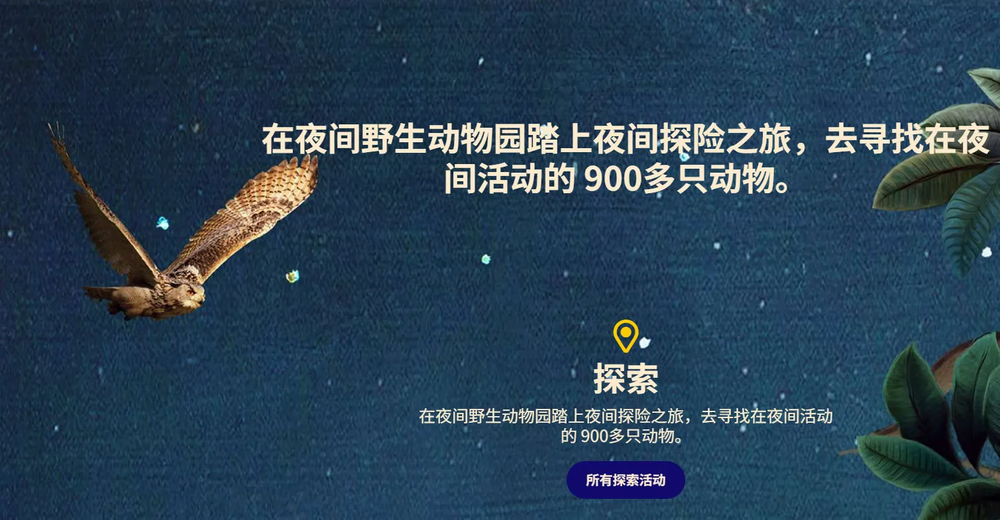
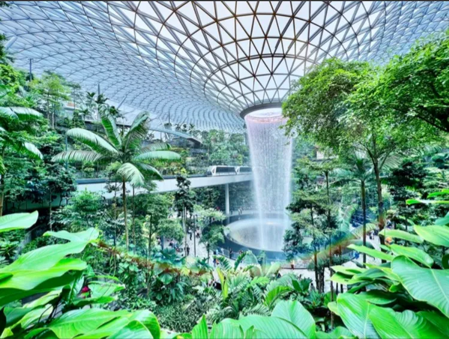
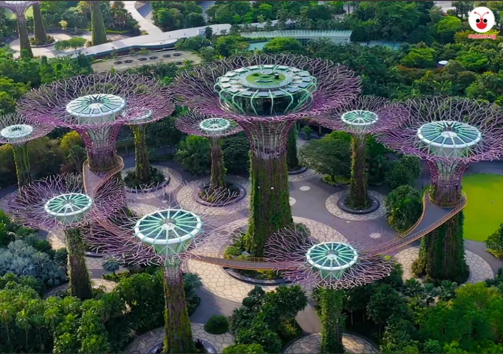

什麼是 GRG (Global Robotics Games 全球機器人運動會)？
GRG (Global Robotics Games) 是具備高度國際影響力的青少年機器人與人工智慧挑戰賽。賽事強調實作、演算法邏輯與跨領域科技應用。2026 GRG 台灣賽區由「臺灣智能程式科技教育推廣協會 (SPARK)」主辦，優秀獲獎隊伍將取得代表權前往新加坡參加 GRG 世界總決賽。
TAIWAN 2026 台灣賽區
地點：桃園市桃園區成功國小
年度主題：Mission Meals（聯合國 SDG 2 消除飢餓）
The Road to Singapore
贏得賽事，您將踏上星國的榮耀之旅。在這裡，前衛科技與熱帶風情交疊，多元文化與壯麗景觀完美交融；這座迷人城市的無盡探索，將是為您準備的最佳加冕禮。
東南亞唯一環球影城，完美結合經典電影主題與刺激遊樂設施，包含變形金剛3D對決與雙軌雲霄飛車，享受沉浸式全日娛樂體驗。

全球第一座夜行性動物專屬野生動物園。搭乘遊園導覽車，在特殊照明下近距離觀察夜間動物的真實活動，體驗獨特叢林探險。

結合自然與科技的大型商場，擁有高達 40 公尺的室內瀑布「雨漩渦」與熱帶植物「資生堂森林谷」，感受壯觀室內自然景觀與燈光秀。
新加坡最具代表性象徵。與噴水魚尾獅合影，隔著海灣將壯麗的「濱海灣金沙酒店」與「藝術科學博物館」盡收眼底。

展現「花園城市」美譽，高達 50 公尺的「擎天樹叢」充滿科技感，更有夜間音樂燈光秀。兩大溫室「花穹」與「雲霧林」更是必訪去處。
距離市中心極近的休閒勝地，集主題樂園、沙灘與渡假村於一身。擁有環球影城、海洋生態館與斜坡滑車等豐富設施，是渡假娛樂最佳選擇。
主題任務：Zero Hunger Challenge (資源分配)
主題任務：Zero Hunger (進階工程)
主題任務：Precision Harvest
主題任務：Integrated Bio-Stack
主題任務：Mission Meals (機器人解決方案專題)
推廣項目：多元科技探索與趣味競技挑戰
Frequently Asked Questions
GRG (Global Robotics Games) 是具備高度國際影響力的青少年機器人與人工智慧挑戰賽。賽事強調實作、演算法邏輯與跨領域科技應用。2026 GRG 台灣賽區由「臺灣智能程式科技教育推廣協會 (SPARK)」主辦，優秀獲獎隊伍將取得代表權前往新加坡參加 GRG 世界總決賽。
2026 GRG 競賽共分為五大組別：
• Mobile Robotics I (MR1)：7 至 9 歲，採用 LEGO SPIKE Essential / WeDo 2.0。
• Mobile Robotics II & III (MR2/3)：10 至 16 歲，採用 LEGO SPIKE Prime / EV3。
• AI Maker Series (AIMS)：7 至 16 歲（分小學/中學組），運用 AI 視覺模型辨識與永續材料設計。
• Mobile Robotics IV (MR4)：17 歲以上大專組，具備高難度 AI 視覺辨識與精密疊加控制。
• Open Category (公開組)：國小至高中職，自製解決方案專題競賽。
參賽隊伍可直接透過官方線上報名表單（點此前往線上報名）填寫教練與選手資料，並透過匯款表單回報款項以完成報名作業。
於台灣賽區表現優異之隊伍，將取得前進新加坡世界總決賽之優先邀請推薦資格。為確保代表團整體運作與安全，實際代表權之行使須全程配合主辦協會統一規劃之團進團出行程及出賽規範。